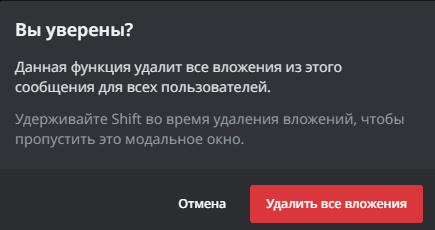
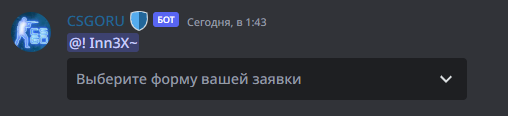
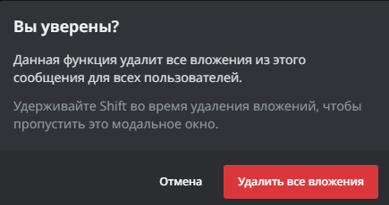
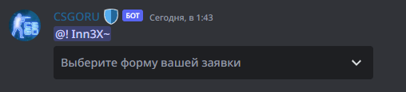
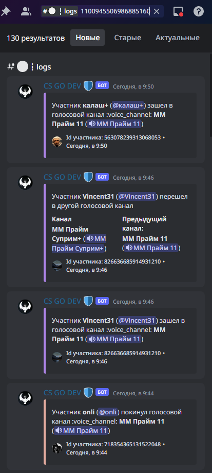
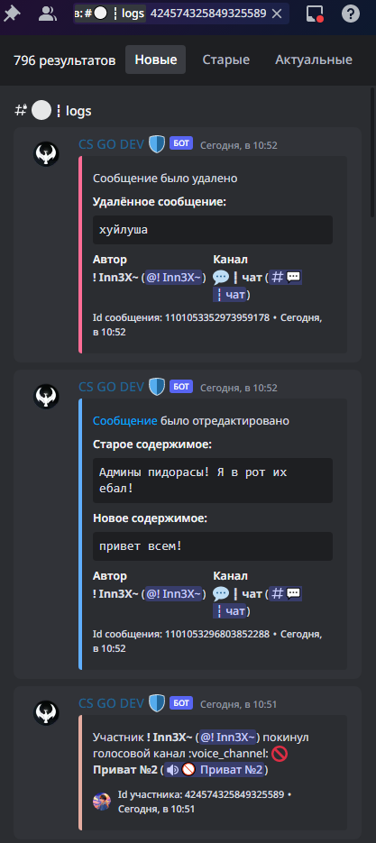
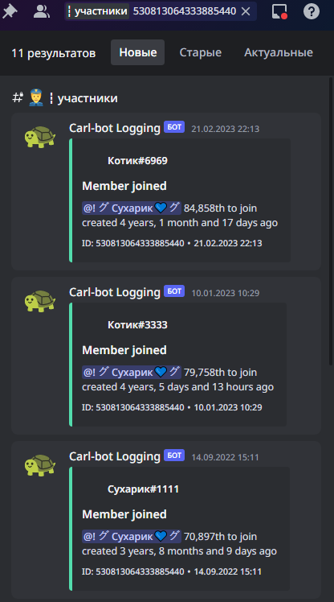
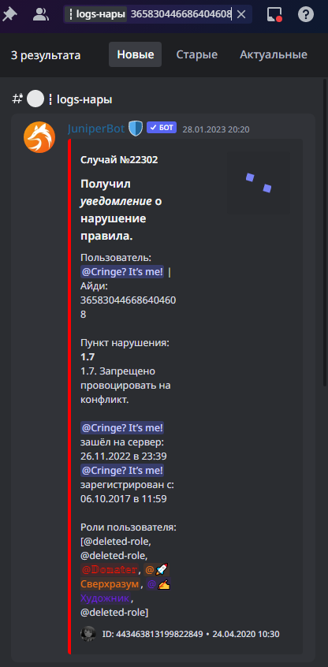
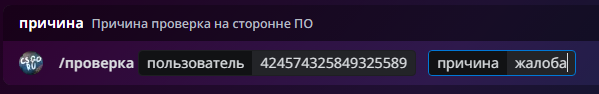
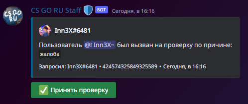

Быстрая навигация:
Вступление Карта навигации: — Важные каналы администрации для дальнейшей работы — Основа общедоступной серверной информации — Как пользоваться пингами — Бип-буп контроллер запрограммирован! 🤖 Или как пользоваться копипастами — Нарушителям не пройти! -- Нарушения и как их выдавать — Ищем предателя... Или как пользоваться логами! 🔪 — Хмм, а ты точно новенький?🤨 Или как пользоваться каналом "Участники" — Сколько раз ты нарушил? Или как пользоваться каналом #logs-нары — Это не государство!!! -- Конституция — Опять двойка... -- тест по конституции — Я же вроде не модератор дискорда..?Верно..?😟 Пункт 1.11 — Меня отчислят... -- тест по 1.11 — О-о-о, а вот это интересно! -- тикеты — Сударь, этикет важнее всего! 🧐 -- скрипт общения — VAC сам сделает за меня работу!!! Проверка на читы — Тесты для закрепления правил Полезные ссылки:Карта навигации
Вступление
Приветствую тебя стажер или заблудший хелпер!
Данная обучалка создана специально для помощи хелперам с обучением, а стажерам с освоением в работе на сервере.
Поверь, это именно то, что поможет тебе в ближайшее время освоиться и мы уверены, что ответит на многие твои вопросы.
Обучалка была создана с целью обучения тебя ключевым задачам в работе на сервере.
Не спеши все пролистать и пробежаться глазами по данному произведению.
Теперь перейдем с Приятного к менее приятному, на ознакомление тебе даётся 3 дня и никак не меньше, за эти 3 дня ты должен хорошо ознакомиться со всем, что здесь изложено. В конце так скажем пройденного тобой материала, тебя ждет экзамен по всему, что здесь написано.
Мы надеемся, что ты добросовестно все изучил, и сможешь сдать экзамен на отлично. Хотя к чему я это, если ты в нашей команде, то в тебе нет смысла сомневаться…
Важные каналы администрации для дальнейшей работы
И так, вот важные каналы для администрации:
#информация — Здесь расписано за что какие роли отвечают, а так же полезные адм.ресурсы в ссылках.
#команды — Тут можно узнать как выдаются наказания, а так же не маловажное - копипасты, о которых мы поговорим чуть позже.
#чат — Чат для администрации, зачастую используется в целях помощи в работе, но также может быть использован в целях общения.
#mutes — Канал для выдачи мутов.
#warns — Канал для выдачи предов.
#bans — Канал для выдачи банов.
#logs — Канал для логирования всех действий на сервере.
#logs-нары — Канал со всеми нарами участников.
#для-команд-адм — Канал для команд администрации, выдачи ролей художника, тяночки, саппорта и тд.
Основа общедоступной серверной информации
#информация — здесь вы можете ознакомиться с основной информацией о сервере.
Множитель опыта у джунипер бота стандартный, то есть х1. Количество опыта которое можно получить в минуту 8-13
Как пользоваться пингами
<@ID> — Пингануть человека — @Inn3X
<#ID> — Пингануть канал — #💬┇общение
<@&ID> — Пингануть роль — @• Администратор
Бип-буп контроллер запрограммирован! 🤖 Или как пользоваться копипастами
В канале #команды в начале вы можете увидеть примеры, как выдавать
наказания. Это поможет вам не ошибаться в выдачи наказаний.
Если пролистать вниз, мы перейдем в раздел копипаст, которые помогут вам быстро и четко отвечать на
вопрос пользователя. Всего у нас два раздела копипаст.
Нарушения правил пользователями:
Этот раздел копипаст сделан для ответов пользователям то бишь:
Ответы на тикет.
Не нравится ваша работа.
Проверка на читы.
За что меня наказали.
Нарушителям не пройти! -- Нарушения и как их выдавать
Наказания у нас существует разных типов:
Нар
Мут — Ограничение доступа в голосовые и текстовые каналы.
Пред — Предупреждение о нарушении правил, несущее за собой строгую форму наказание.
Бан — Полное ограничение доступа к серверу для конкретного игрока.
Каждое из них выдается в определенных случаях. Все случаи прописаны в таблице наказаний. А более подробно каждый пример можно разобрать в конституции.
Наказания выдаются в специализированные каналы. Это касается всех видов наказаний кроме Нара.
Начнем от Большего к Меньшему:
Бан — Высшая мера наказания. Выдается за нарушения наиболее высокого уровня.
Бан выдается строго в канал #bans. Строго по форме ниже:
Постоянная форма: !бан [ID] [Время] [Пункт правил]
Пример: !бан 482538999039393797 360d 1.6
Пред — Одна из высоких мер наказаний. Выдается за нарушения высокого уровня.
Пред выдается строго в канал #warns. Строго по форме ниже:
Постоянная форма: !пред [ID] [Пункт правил]
Пример: !пред 1050394834923429888 4.5
Мут — Одна из привычных мер наказаний. Выдается за нарушения средней и высокой тяжести.
Мут выдается строго в канал #mutes. Строго по форме ниже:
Постоянная форма: !мьют [ID] [Время] [Пункт правил]
Пример: j!мьют 1050394834923429888 2h 4.5
Нар — Cлабейшая мера наказания. Выдается за мелкие нарушения.
Нар выдается в разных случаях по разному:
Случай 1 — Пользователь нарушил правило в чате, в любом из текстовых каналов: #для-команд, #общение и другие.
В этом случае нар выдается в канал где было нарушение: #для-команд, #общение и другие, ЗА ИСКЛЮЧЕНИЕМ #поиск-игроков, если видите там нарушение — то просто удаляете сообщение, и переходите в #для-команд и там выдаёте нар, так же сообщения перенаправления и тому подобные — пишутся пользователю в лс!
Случай 2 — Пользователь нарушил правило в голосовом канале: ММ Прайм, Faceit.
В этом случае нар выдается строго в канал #для-команд.
Как правильно удалять последнюю анкету в канале #поиск-команды
Для того чтобы удалить анкету в чате поиск-команды и при этом не крашнуть бота, вам нужно навести курсор на анкету и нажать на крестик возле анкеты, тогда кнопка "Создать анкету" сохраниться.
 



Ищем предателя... Или как пользоваться логами! 🔪
Для того, чтобы научиться пользоваться логами, в кармане нужно иметь ID канала или пользователя!
Логи канала:
Если вы хотите посмотреть всю историю от создания до нынешнего момента заходов в канал — необходимо нажать на интересующий канал правой кнопкой мыши, и в самом конце нажать “Копировать ID канала”.
Зайти в канал #logs, нажать сочетание клавиш CTRL + F, это горячая клавиша поиску именно по каналу, в нашем случае #logs. Конечно, вы можете нажать на строку поиска справа в верхнем углу, и выбрать “в:” и указать канал, но поверьте, горячей клавишей намного удобнее ;D
После поиска по каналу вставляете ID комнаты, и видите всю историю заходов и выходов из канала.
Таким образом можно вычислить кто является хостом(главным) в комнате, и ему решать кого кикать.
Также, если канал создан давно, то искать кто хост таким образом — долго, и можно просто посмтореть лог каждого отдельного пользователя, по отметке времени, кто первый зашел — хост
Пример как выглядит логи комнаты:
Логи пользователя:
Если вы хотите посмотреть всю историю пользователя, куда он заходил и выходил — необходимо нажать на интересующего пользователя правой кнопкой мыши, и в самом конце нажать “Копировать ID пользователя”.
Зайти в канал #logs, нажать сочетание клавиш CTRL + F, это горячая клавиша поиску именно по каналу, в нашем случае #logs. Конечно, вы можете нажать на строку поиска справа в верхнем углу, и выбрать “в:” и указать канал, но поверьте, горячей клавишей намного удобнее ;D
После поиска по каналу вставляете ID пользователя, и видите всю историю действий на сервере: заходы/выходы из каналов, удаление/редактирование сообщений.
Пример как выглядят логи пользователя:
Хмм, а ты точно новенький?🤨 Или как пользоваться каналом "Участники"
Как понять что пользователь новенький или сколько раз она заходил на сервер?
Все это можно узнать в канале #участники
Тут идет почти та же самая логика что и поиска по логам.
Копируем ID интересующего человека.
После того как вы скопировали его ID вам необходимо открыть канал #участники
Нажать комбинацию CTRL+F а после CTRL+V, а после ENTER и у вас появиться вот такое окно в котором можно увидеть когда человек заходил и выходил с сервера
Сколько раз ты нарушил? Или как пользоваться каналом #logs-нары
Есть много пунктов правил, где степень наказания зависит от ранее полученных наров.Для того, чтобы посмотреть количество наров у человека, нужно:
Скопировать айди интересующего пользователя
Зайти в канал #logs-нары
Начать поиск по каналу сочетанием клавиш CTRL+F
Вставить ID пользователя
Видим следующий результат:

Это не государство!!! -- Конституция
Теперь время разобраться со сложными ситуациями, для этого нам понадобится конституция
Важно то, что конституция неотъемлемая часть работы в стаффе, знание ее обязательно, так как с помощью этих знаний вы будете быстро реагировать на ситуации, так как знаете какое правило за что отвечает, а также будете максимально крутыми😎
Опять двойка... -- тест по конституции
Теперь, как вы прочитали конституцию, самое время проверить ваши знания, тест создан в целях закрепления знаний!
Пользоваться конституцией при ответе на тест — можно
Я же вроде не модератор дискорда..?Верно..?😟 Пункт 1.1
1.14 очень важно знать и изучать так как мы официальные партнёры дискорда, а значит при нарушении правил сообщества дискорда, партнерка будет снята.
Меня отчислят... -- тест по 1.14
Теперь, как ознакомились с пунктом 1.14, самое время проверить ваши знания, тест создан в целях закрепления знаний!
Пользоваться табличкой 1.14 при ответе на тест — можно
О-о-о, а вот это интересно! -- тикеты
Самое интересное в нашей работе это тикеты! Нужно уметь успевать их принимать и правильно разбирать.
Для того, чтобы у вас появились тикеты у вас должна быть роль @Support
Пока вы новенький в нашей семье у вас будет временная роль @Support,которая будет вам выдаваться только при наличии вашего куратора в сети
В дальнейшем по достижению недели, если вы показали, что уже самостоятельный стажёр, вы получите эту роль и сможете без ограничения ходить по тикетам.
У нас есть две разновидности тикетов это:
Голосовые — Вас вызывают в канал и вы разбираете вопрос/жалобу
Текстовые — Тоже самое только у вас появляется отдельный чат с пользователем где вы можете ответить на его вопрос либо решить его проблему.
Теперь научимся принимать голосовые тикеты.
В разделе #поддержка у вас добавятся 2 новых канала — это:
Ticket logs — Где храниться ваша текстовая переписка с пользователем в текстовом тикете.
Голосовые тикеты — В этом канале можно смотреть какие голосовые тикеты были приняты и самим принимать тикеты.
Как принимать голосовые тикеты:
Заходим в сам канал #голосовые-тикеты. Здесь вы можете увидеть
закрытые тикеты и тикеты, которые ещё никто не взял.
Если тикет горит красным —
значит его уже взять нельзя, если зеленым, как продемонстрировано снизу — это означает
то, что тикет ещё можно взять.
Как закрыть тикет:
Нажимаем на название комнаты (на скриншоте это комната ММ Прайм 4 нова)
После того как нажали на название комнаты и перешли в канал — сразу нажимаете на кнопку “Завершить” и тогда тикет будет являться вашим
Как принимать текстовые тикеты:
Когда приходит текстовое обращение у вас под каналом #голосовые-тикеты появится новый канал “обращение и его номер” (#обращение-1337).
Теперь мы перешли в отдельный текстовый чат с пользователем чтобы принять обращение требуется нажать на кнопку “Управление обращением” Когда мы нажали на кнопку у нас появиться “принять обращение” и теперь мы можем решать проблему пользователя!
Как закрыть текстовый тикет:
Нажимаем на на кнопку “Управление обращением”
После этого нажимаете на кнопку “Завершить” и если у пользователя не осталось вопросов — он подтверждает закрытие, и тикет закрывается, после можете записывать этот тикет себе в таблицу отчетов вашим
Некоторые пользователи могут попытаться спровоцировать вас, но нужно удерживаться от соблазна оскорбить их. Как правильно общаться с пользователями вы можете увидеть снизу.
Сударь, этикет важнее всего! 🧐 -- скрипт общения
Сегодня вы будете запрограммированы на наилучшее общение с пользователями.
Специально для вас мы подготовили скрипт общения. Это та самая зона комфорта которую вы должны создать для участника!
К счастью общаясь так вы будете помогать пользователям быстрее, а разобраться в ситуации будет проще.
Обязательно общаться с пользователями именно в этом формате! Там вы найдете все, на все ситуации.
VAC сам сделает за меня работу!!! Проверка на читы
Перейдем к проверке на читы, дело интересное, но довольно сложное.
Хелпер конечно тебя обучит проверке, но не будет лишним и прочесть информацию здесь.
К проверке на читы надо подходить довольно серьезно, ведь если есть жалоба, значит есть подозрение, а значит нужно тщательно проверять файлы пользователя которого ты проверяешь. В момент когда отписываешь пользователю копипасту для созвона на проверку и он тебе задает вопросы какая именно жалоба, не спеши с тем, чтобы сказать ему о проверке на читы, ведь тогда ты теряешь эффект неожиданности. И помни, что администрация не обязана предоставлять какие либо доказательства о жалобе поступившей на пользователя.
Что же делать когда поступает жалоба? Сейчас расскажем!
Заходим в канал #проверка-на-читы
Далее пишем форму подобным образом:
Оп, и у тебя появляется эмбедка где ты можешь сам взять проверку, или принять другие жалобы:
После этого ты нажимаешь на принять проверку и идешь в канал #команды
И тут тебе нужна последняя копипаста которая находится в самом низу:
Доброго времени суток! Я являюсь администратором дискорд сервера CS GO RU. На вас поступила жалоба от одного из пользователей нашего сервера. Не могли бы мы созвониться?
Копируешь её и отправляешь пользователю в лс, в случае отказа или игнора в течении —
24-ёх часов, если у человека статус "Не в сети" или "Неактивен"
6-ти часов, если у человека статус "Не беспокоить"
4-ёх часов, если у человека статус "В сети"
выдаешь
наказание по 1.15, если же он соглашается на проверку, то тщательно
его проверяешь.
Теперь перейдем к важной части. А как же нам проверить человека на читы?
Специально для этого, мы
создали небольшой гайд по проверке на читы, порядок запуска и другое.
После того, как человек зашел к вам в ЛС, выполняем дальнейшие действия:
1. Попросите человека включить демонстрацию экрана.
2. Вышлите человеку архив для проверки в личные сообщения который прикреплён ниже.

3. Попросите человека разархивировать архив на рабочий стол.
4. Попросите его по очереди создать текстовый документ(.txt) и архив(.zip .rar).
5. По очереди пускай перекинет эти 2 файла на нижнюю панель.
6. Попросите далее открыть разархивированную папку.
7. Попросите человека открыть everything.exe
Попросите человека нажать "date modified" (отсортировать по дате).
Попросите пролистать медленно до даты захода человека на сервер.
8. Попросите человека открыть LastActivityView.exe
Попросите человека нажать на Action Time (стрелочка должна смотреть вниз).
Попросите листать до запуска CS:GO и смотрите какие программы запускались до и после запуска игры.
Попросите человека до листать до даты захода на сервер.
9. Попросите человека открыть z.exe
Попросите человека нажать кнопку анализ и ожидать загрузку.
Попросите человека нажать на кнопку "посещенные".
Попросите человека до листать до даты захода на сервер.
10. Попросите человека открыть nocheats.bat
Просмотрите все папки которые открылись на наличие сторонних программ.
11. Попросите человека открыть USBDeview.exe
Просмотрите какие были подключённые устройства к ПК.
12. Сообщить человеку прошел ли он проверку.
13. Внесите результат проверки в принятую заявку путём нажатие на одну из трёх кнопок.
Важно заметить то, что если у человека подозрительно мало файлов, будто он только что переустановил винду, то есть шанс того, что человек использует виртуальную машину!
И так, гайд как проверить человека на виртуальную машину:
1. Просим человека нажать сочетание клавиш WIN + R и после просите ввести cmd
2. Просим в окне командной строки написать SYSTEMINFO или же Systeminfo | findstr /i model
Вдруг что, проверьте и в другом приложении:
1. Просим человека нажать сочетание клавиш WIN + R и после просите ввести powershell
2. Просим в окне программы написать gwmi -q "select * from win32_computersystem"
В обоих случаях смотрим на Модель системы и Изготовитель системы иногда бывает на английском языке System Model или же System Manufacturer
1. Если там ASUS, GIGABYTE, или еще известные фирмы, то все в порядке, если там нет ничего или же vm box, VM, virtual machine или что то вроде, то у человека виртуальная машина, просим зайти с компьютера, а не с виртуалки
2. Команда Systeminfo | findstr /i model если видите характеристику процессора и ничего больше, то все хорошо, человек сидит с компьютера, если же выше характеристики прроцессора написано vm box, VM, virtual machine, то человек сидит с виртуальной машины, и просим его зайти с компьютера, а не с виртуалки
Если нашли у человека виртуалку, и он отказывается переходить на пк, то выдаем по 1.15
Тесты для закрепления правил
Теперь, после того как вы прошли молодой курс бойца нужно закрепить ваши знания, тест создан в целях закрепления знаний и только!
Пользоваться информацией с табличек — можно
Тест по основному блоку правил
Тест по рекламному блоку правил
Тест по Административному блоку правил